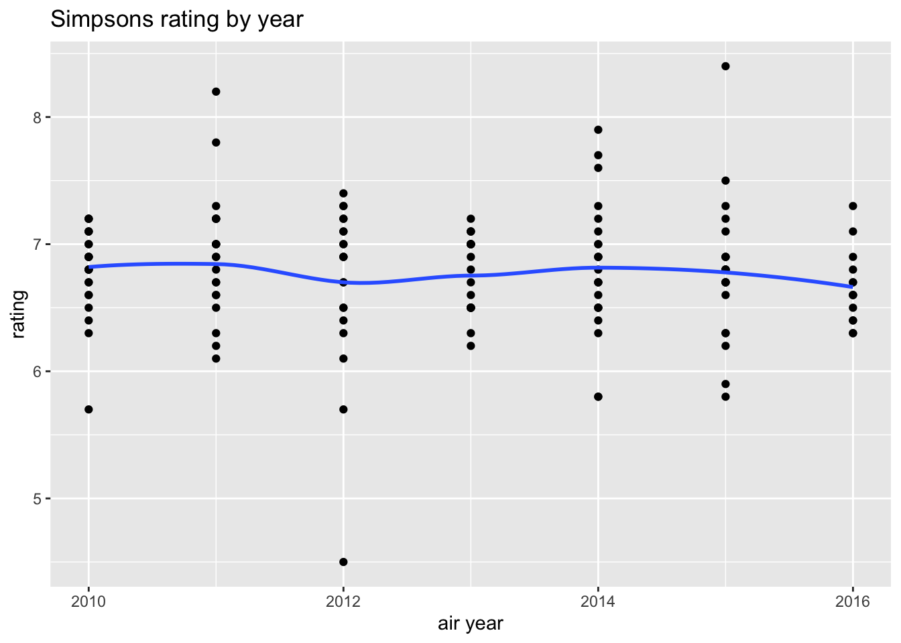

install.packages("tidytuesdayR", repos = "https://cloud.r-project.org/")
The downloaded binary packages are in
/var/folders/vg/12r57nf51593b_d4zr1kvcgw0000gn/T//RtmpSoN97l/downloaded_packageslibrary("tidytuesdayR")Analysis of Donuts, Data, and D’oh - A Deep Dive into The Simpsons from TidyTuesday
Blair Kim
February 12, 2025
The downloaded binary packages are in
/var/folders/vg/12r57nf51593b_d4zr1kvcgw0000gn/T//RtmpSoN97l/downloaded_packages###_____________________________________________________________________________
### The Simpson's data!
### Script to clean the data sourced from Kaggle
###_____________________________________________________________________________
# packages
library(httr)
library(tidyverse)── Attaching core tidyverse packages ──────────────────────── tidyverse 2.0.0 ──
✔ dplyr 1.1.4 ✔ readr 2.1.5
✔ forcats 1.0.0 ✔ stringr 1.5.1
✔ ggplot2 3.5.1 ✔ tibble 3.2.1
✔ lubridate 1.9.4 ✔ tidyr 1.3.1
✔ purrr 1.0.2
── Conflicts ────────────────────────────────────────── tidyverse_conflicts() ──
✖ dplyr::filter() masks stats::filter()
✖ dplyr::lag() masks stats::lag()
ℹ Use the conflicted package (<http://conflicted.r-lib.org/>) to force all conflicts to become errors
Attaching package: 'jsonlite'
The following object is masked from 'package:purrr':
flattenlibrary(withr)
# Define the metadata URL and fetch it
metadata_url <- "www.kaggle.com/datasets/prashant111/the-simpsons-dataset/croissant/download"
response <- httr::GET(metadata_url)
# Ensure the request succeeded
if (httr::http_status(response)$category != "Success") {
stop("Failed to fetch metadata.")
}
# Parse the metadata
metadata <- httr::content(response, as = "parsed", type = "application/json")
# Locate the ZIP file URL
distribution <- metadata$distribution
zip_url <- NULL
for (file in distribution) {
if (file$encodingFormat == "application/zip") {
zip_url <- file$contentUrl
break
}
}
if (is.null(zip_url)) {
stop("No ZIP file URL found in the metadata.")
}
# Download the ZIP file. We'll use the withr package to make sure the downloaded
# files get cleaned up when we're done.
temp_file <- withr::local_tempfile(fileext = ".zip")
utils::download.file(zip_url, temp_file, mode = "wb")
# Unzip and read the CSV
unzip_dir <- withr::local_tempdir()
utils::unzip(temp_file, exdir = unzip_dir)
# Locate the CSV file within the extracted contents
csv_file <- list.files(unzip_dir, pattern = "\\.csv$", full.names = TRUE)
if (length(csv_file) == 0) {
stop("No CSV file found in the unzipped contents.")
}
# Read the CSV into a dataframe
simpsons_characters <- read_csv(csv_file[1])Rows: 6722 Columns: 4
── Column specification ────────────────────────────────────────────────────────
Delimiter: ","
chr (3): name, normalized_name, gender
dbl (1): id
ℹ Use `spec()` to retrieve the full column specification for this data.
ℹ Specify the column types or set `show_col_types = FALSE` to quiet this message.Rows: 600 Columns: 14
── Column specification ────────────────────────────────────────────────────────
Delimiter: ","
chr (4): image_url, production_code, title, video_url
dbl (9): id, imdb_rating, imdb_votes, number_in_season, number_in_series, o...
date (1): original_air_date
ℹ Use `spec()` to retrieve the full column specification for this data.
ℹ Specify the column types or set `show_col_types = FALSE` to quiet this message.Rows: 4459 Columns: 3
── Column specification ────────────────────────────────────────────────────────
Delimiter: ","
chr (2): name, normalized_name
dbl (1): id
ℹ Use `spec()` to retrieve the full column specification for this data.
ℹ Specify the column types or set `show_col_types = FALSE` to quiet this message.Warning: One or more parsing issues, call `problems()` on your data frame for details,
e.g.:
dat <- vroom(...)
problems(dat)Rows: 158271 Columns: 13
── Column specification ────────────────────────────────────────────────────────
Delimiter: ","
chr (5): raw_text, raw_character_text, raw_location_text, spoken_words, norm...
dbl (7): id, episode_id, number, timestamp_in_ms, character_id, location_id,...
lgl (1): speaking_line
ℹ Use `spec()` to retrieve the full column specification for this data.
ℹ Specify the column types or set `show_col_types = FALSE` to quiet this message.Rows: 6,722
Columns: 4
$ id <dbl> 7, 12, 13, 16, 20, 24, 26, 27, 29, 30, 34, 35, 36, 37,…
$ name <chr> "Children", "Mechanical Santa", "Tattoo Man", "DOCTOR …
$ normalized_name <chr> "children", "mechanical santa", "tattoo man", "doctor …
$ gender <chr> NA, NA, NA, NA, NA, NA, NA, NA, NA, NA, NA, NA, NA, NA…Rows: 600
Columns: 14
$ id <dbl> 10, 12, 14, 17, 19, 21, 23, 26, 28, 30, 32, 35,…
$ image_url <chr> "http://static-media.fxx.com/img/FX_Networks_-_…
$ imdb_rating <dbl> 7.4, 8.3, 8.2, 8.1, 8.0, 8.4, 7.8, 8.0, 8.2, 7.…
$ imdb_votes <dbl> 1511, 1716, 1638, 1457, 1366, 1522, 1340, 1329,…
$ number_in_season <dbl> 10, 12, 1, 4, 6, 8, 10, 13, 15, 17, 19, 22, 2, …
$ number_in_series <dbl> 10, 12, 14, 17, 19, 21, 23, 26, 28, 30, 32, 35,…
$ original_air_date <date> 1990-03-25, 1990-04-29, 1990-10-11, 1990-11-01…
$ original_air_year <dbl> 1990, 1990, 1990, 1990, 1990, 1990, 1991, 1991,…
$ production_code <chr> "7G10", "7G12", "7F03", "7F01", "7F08", "7F06",…
$ season <dbl> 1, 1, 2, 2, 2, 2, 2, 2, 2, 2, 2, 2, 3, 3, 3, 3,…
$ title <chr> "Homer's Night Out", "Krusty Gets Busted", "Bar…
$ us_viewers_in_millions <dbl> 30.3, 30.4, 33.6, 26.1, 25.4, 26.2, 24.8, 26.2,…
$ video_url <chr> "http://www.simpsonsworld.com/video/27519750787…
$ views <dbl> 50816, 62561, 59575, 64959, 50691, 57605, 56486…Rows: 4,459
Columns: 3
$ id <dbl> 1, 2, 3, 4, 5, 6, 7, 8, 9, 10, 11, 12, 13, 14, 15, 16,…
$ name <chr> "Street", "Car", "Springfield Elementary School", "Aud…
$ normalized_name <chr> "street", "car", "springfield elementary school", "aud…Rows: 158,271
Columns: 13
$ id <dbl> 9549, 9550, 9551, 9552, 9553, 9554, 9555, 9556, 955…
$ episode_id <dbl> 32, 32, 32, 32, 32, 32, 32, 32, 32, 32, 32, 32, 32,…
$ number <dbl> 209, 210, 211, 212, 213, 214, 215, 216, 217, 218, 2…
$ raw_text <chr> "Miss Hoover: No, actually, it was a little of both…
$ timestamp_in_ms <dbl> 848000, 856000, 856000, 864000, 864000, 877000, 881…
$ speaking_line <lgl> TRUE, TRUE, TRUE, TRUE, TRUE, TRUE, TRUE, TRUE, FAL…
$ character_id <dbl> 464, 9, 464, 9, 40, 38, 40, 8, NA, 9, 469, 9, 469, …
$ location_id <dbl> 3, 3, 3, 3, 3, 3, 3, 3, 374, 374, 374, 374, 374, 37…
$ raw_character_text <chr> "Miss Hoover", "Lisa Simpson", "Miss Hoover", "Lisa…
$ raw_location_text <chr> "Springfield Elementary School", "Springfield Eleme…
$ spoken_words <chr> "No, actually, it was a little of both. Sometimes w…
$ normalized_text <chr> "no actually it was a little of both sometimes when…
$ word_count <dbl> 31, 3, 22, 5, 33, 8, 1, 5, NA, 4, 19, 8, 10, 9, 19,…###_____________________________________________________________________________
# Problems with the Data!
# The script lines are of great interest, but it is a larger file, too big
# for Tidy Tuesday. We need to reduce the size of the file so we can use all
# the files together for a more robust analysis.
# Let's filter episodes down to the years 2010-2016, and then only select
# the script lines that correspond with those episodes.
###_____________________________________________________________________________
# filter episodes to include 2010+
simpsons_episodes <- simpsons_episodes |>
dplyr::filter(original_air_year >= 2010)
# filter script lines to only include lines for these episodes
simpsons_script_lines <- simpsons_script_lines |>
dplyr::semi_join(simpsons_episodes, by = c("episode_id" = "id"))# simpsons ratings by seasons
ggplot(simpsons_episodes, aes(x = original_air_year, y = imdb_rating)) +
geom_point() +
geom_smooth(se = FALSE) +
labs(
x = "air year",
y = "rating",
title = "Simpsons rating by year")`geom_smooth()` using method = 'loess' and formula = 'y ~ x'Warning: Removed 3 rows containing non-finite outside the scale range
(`stat_smooth()`).Warning: Removed 3 rows containing missing values or values outside the scale range
(`geom_point()`).
Original data from https://www.kaggle.com/datasets/prashant111/the-simpsons-dataset